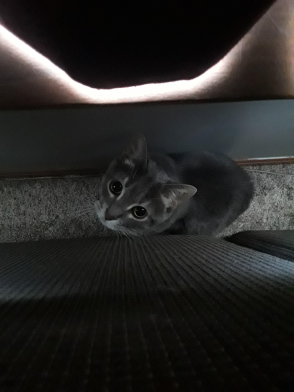

A formal resume is great for a job interview, but doesn't often give you a great picture of who a person is! Here's where I'll show off a bit more about me!
I'm Evan Duda, a Junior in College. I grew up in Joliet, Illinois with my parents and younger brother, and have lived there pretty much all my life. I've pretty much always been fascinated with fiction, video games, roleplaying games, and especially narrative design and worldbuilding, which are reflected in my hobbies and interests. I love reading, playing games with friends, swimming, writing, and designing worlds and characters. I'm also currently working on creating a board game that I hope to publish!
A random list of some of my favorite things:
I ran out of ideas on what to say, so here's my cat, Sophie: 